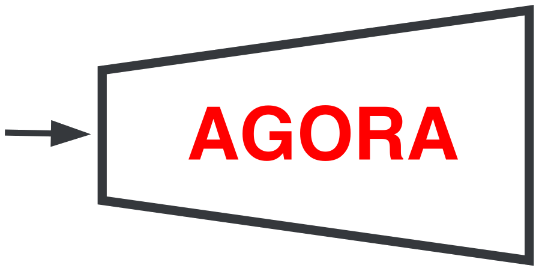
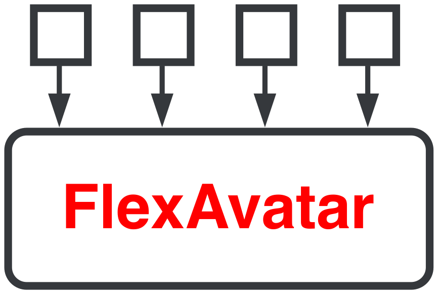
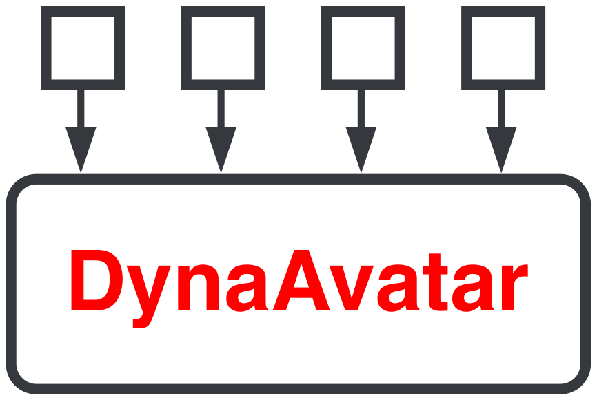
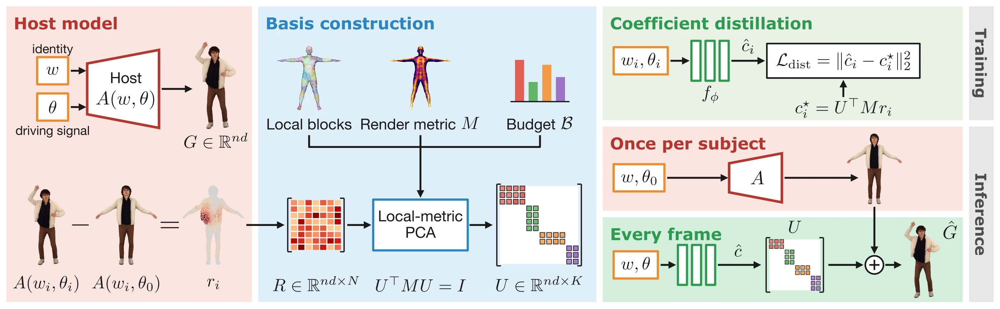

GALA(AGORA)
on FFHQ
3 of 5
metrics best, 1 second best
FIDAEDAED-jawIDAPD
vs Next3D, GAIA, EG3D, GGHead
TL;DR Gaussian avatars rerun a heavy network for every new pose. GALA distills it into a linear blend of shared blendshapes and a shallow MLP: up to ×2,659 faster on CPU, without retraining it.
3D Gaussian avatars support fast rendering, however, their real-time animation is often challenged by the costly neural inference. We address this bottleneck and show that the animation of pretrained avatar models can be closely approximated by a linear combination of identity-independent blendshapes. Building on this finding, we introduce GALA (Gaussian Animation via Linear Approximation), a distillation method that replaces per-frame heavy neural decoding with a shallow coefficient predictor and a linear blend. To improve fidelity and reduce memory requirements, we propose to construct the basis using block-local PCA under a rendering-aware metric and a memory budget. Our method learns a shallow MLP network to predict blendshape coefficients and applies to various animation architectures without retraining original models. We validate GALA by accelerating the inference of three distinct avatar models for 3D animation of facial expressions and full-bodies with clothing dynamics. Across these models, our distillation generalizes to held-out identities and reduces CPU animation cost by up to three orders of magnitude while preserving most of the rendering quality. Excellent results of our method confirm the shared linear structure of learned avatar representations and enable highly efficient and accurate animation at frame rates reaching up to 60fps on mobile devices.
New viewpoint rasterize only
New pose rerun the transformer
A new viewpoint is cheap: 622 fps. A new pose reruns a large network: 1.8 s, even on a desktop GPU.
DynaAvatar on an RTX 6000 Ada.
GALA distills a pretrained avatar model, the host, into one shared blendshape basis and a shallow network. Three very different hosts, none retrained.



CPU time per animation step; the counters replay it. *With skinning.
Hosts: AGORA (Fazylov et al.), FlexAvatar (Kirschstein et al., CVPR 2026), DynaAvatar (Kwon et al., CVPR 2026).
Take the residual between the animated avatar and the neutral avatar of the same identity.
It is closely approximated by a weighted sum of basis vectors.
Inputone generated image
FlexAvatar hostoriginal animation
Neutral onlyno blendshapes
Projectedonto the shared basis
The same blendshapes close an eye, close a mouth or lift a jacket on every identity. Drag the slider.
First column: where they act. Each row moves a group of local blendshapes between two states.

Build one basis from the host’s residuals, train a shallow network to predict the coefficients, then blend. Click a stage.
We run the host on many identities and poses, and keep each residual to the neutral avatar.
All residuals go into one matrix. A PCA over local blocks, in a rendering-aware metric and under a memory budget, gives the basis U.
A shallow MLP predicts the coefficients from the identity and the driving signal.
Expressions, mouth interiors and garment motion, at a few milliseconds per frame.
on FFHQ
3 of 5
metrics best, 1 second best
vs Next3D, GAIA, EG3D, GGHead
on VFHQ and Ava256
8 of 12
metrics best, 2 second best
vs LAM, GAGAvatar, Portrait4D-v2, GPAvatar, Avat3r
on 4D-Dress
3 of 3
metrics best
vs IDOL, LHM, PERSONA
Best2nd bestOther Quality metrics from the paper; the host itself is not ranked.
22× fasterthan the best distilled network, and more accurateFID 3.47 in 5.5 ms vs 3.60 in 124 ms
40× slowerthe only distilled network that is more accurate than oursLPIPS 0.100 in 175 ms vs 0.109 in 4.4 ms
5.7× fasterthan the best distilled network, and more accurateLPIPS 0.0455 in 92 ms vs 0.0446 in 16 ms
Lower is better on both axes. Blue: smaller distilled copies of the host network. Diamond: our final model.
WebGL only: the network and the blend run as shader passes. No host network runs in the browser.
If you use our work, please cite it as:
@article{fazylov2026gala,
title = {One Basis to Animate Them All: Gaussian Blendshape Distillation for Real-Time Avatars},
author = {Fazylov, Ramazan and Lefkimmiatis, Stamatis and Laptev, Ivan},
journal = {arXiv preprint},
year = {2026}
}